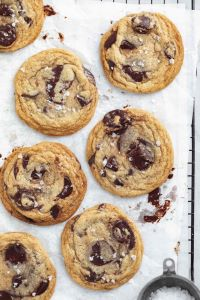
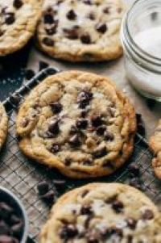
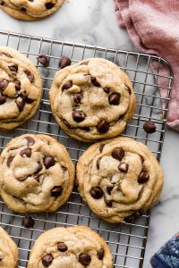
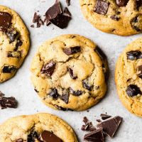

A few of my favorite bakery blogs below!
Broma Bakery is one of my favorite bakery blogs I've discovered! The head baker, Sarah Fennel, was the first baker that made me realize I had a passion for baking. Her recipes were very easy to try as a brand new creator! I have since created my own recipes and blog thanks to Sarah! Her amazing techniques have allowed me to transform into an intelligent baker myself!
Butternut Bakery is my second favorite blog trailing very closely behind Broma Bakery! This blog contains A TON of intricate recipes that are tailored towards specific events. The author, Jenna Barnard, is an amazing author and has even introduced her first cookbook! I love to incorporate her techniques with mine especially when I am preparing to make a cake!
Sally's Baking Addiction has been a very good basic blog for me while learning how to bake. During Covid-19, I was struggling to learn even the basics but thanks to Sally, I was able to perfect my techniques. This blog is the perfect place for beginners learning to create staple recipes. Also, she posts every other day and she has thousands of recipes on her website!
Joy Food Sunshine is a blog I have recently discovered but am starting to really enjoy her content! The baker and author, Laura, posts content every single day and is always trying out new recipes. Not only has she perfected the Chocolate Chip Cookie but she is also beginning to expand her palette into other types of baked goods. Her recipes are simple and very easy to follow whether you are a beginner or an expert!
| Blog Name | Baker | Ranking |
|---|---|---|
| Broma Bakery | Sarah | #1 |
| Butternut Bakery | Jenna | #2 |
| Joy Food Sunshine | Laura | #3 |
| Sally's Baking Addiction | Sally | #4 |